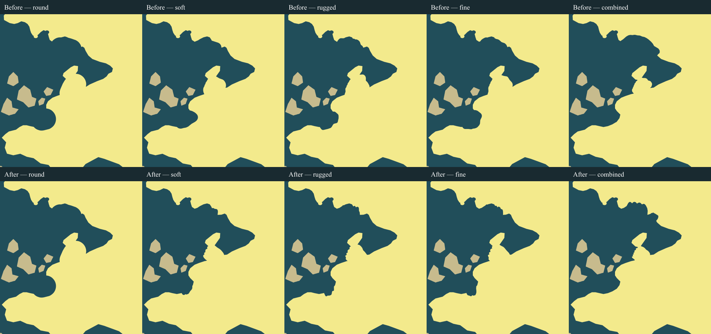
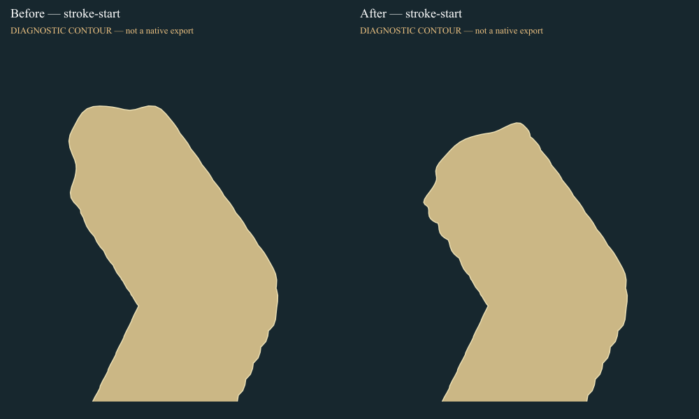
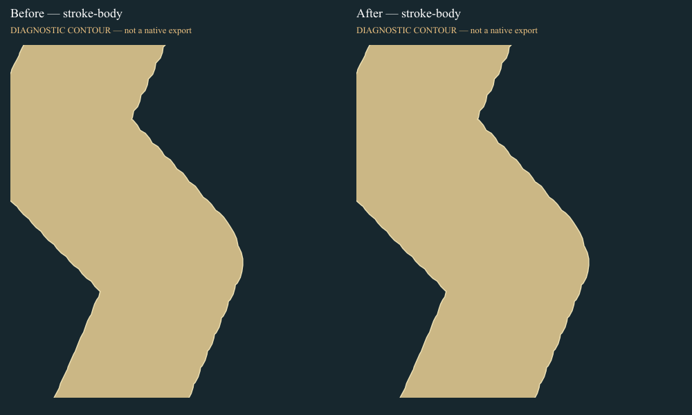
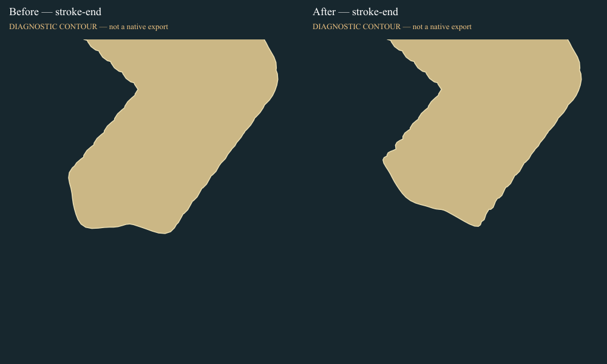
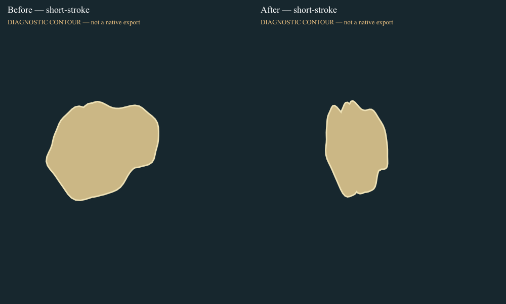
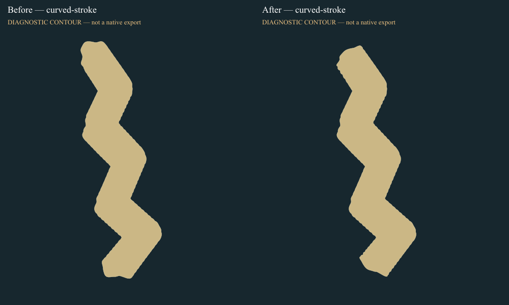
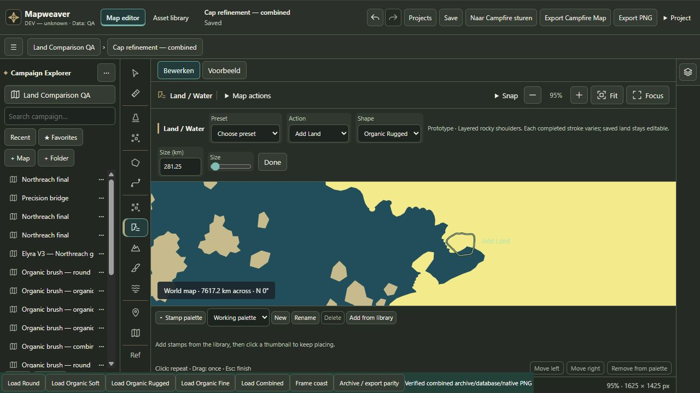

Organic Stroke Cap Refinement
REJECT this policy for production. One iteration completed. The broad caps become shorter, but repeated small teeth appear along short cap transitions at normal map zoom. 115 regression tests, build and storage/export parity pass; visual acceptance fails. No second correction iteration, merge, push or package.
Report · Visual decision · Implementation · Tests · Measurements · QA editor
Native UI exports — before above / after below

Full native downloads and editable projects
Separate geometry diagnostics — not native exports

Start
Body
End
Short stroke
Curved stroke
Actual editor UI check

This gesture was undone before final Save/export confirmation. Primary Development, Campfire and previous proof remain unchanged. The rejected prototype remains on the local feature branch only.